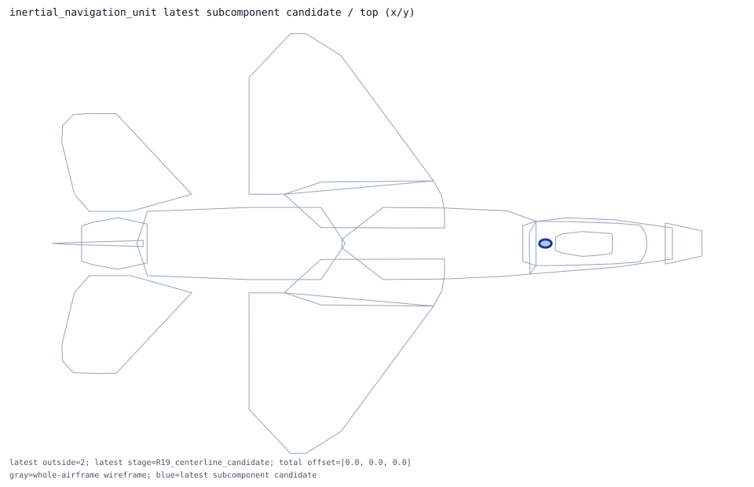
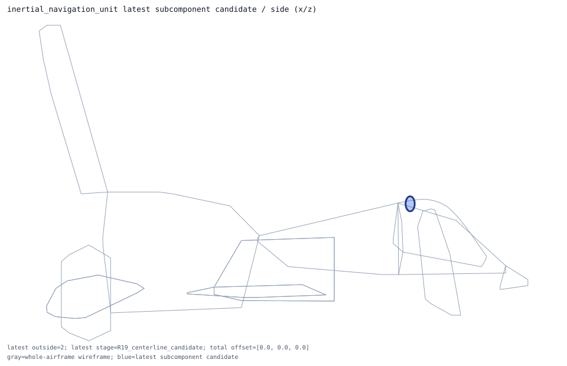
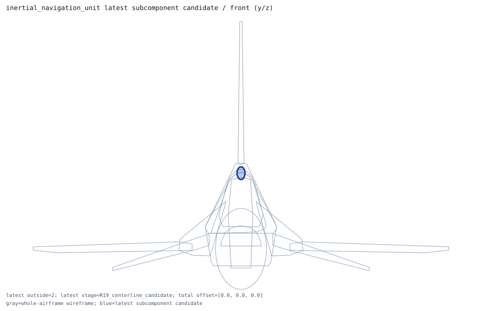

inertial_navigation_unit
ellipsoid -> current_shape_recheck; shape_candidate_does_not_reduce_exposure_requires_new_placement_model
Candidate Details
- item: inertial_navigation_unit
- type: receiver_prior
- system: navigation
- role: small_avionics_receiver
- current shape: ellipsoid axis=none
- candidate evaluation shape: ellipsoid axis=none
- nominal dimensions m: [0.24892, 0.1778, 0.1778]
- dimension policy: preserve_nominal_public_or_declared_prior_dimensions_no_shrink
- placement policy: preserve_current_dimensions_and_shape_for_recheck
- current outside samples: 2
- candidate outside samples: 2
- candidate center shift m: 0.0
- centerline candidate offset m: [0.0, 0.0, 0.0]
- centerline candidate center m: [2.6, 0.0, 0.05]
- centerline candidate outside samples: 2
- centerline candidate status: centerline_candidate_does_not_reduce_exposure_requires_new_geometry
- centerline candidate action: design_new_size_cross_section_or_multi_region_centerline_model
- latest candidate stage: R19_centerline_candidate
- latest candidate center m: [2.6, 0.0, 0.05]
- latest candidate outside samples: 2
- latest candidate status: latest_candidate_still_exposes_silhouette_requires_geometry_model
- latest candidate action: keep_runtime_inactive_and_design_new_section_or_envelope_model
- recommended action: design_new_size_or_centerline_model_before_runtime_activation
- rationale: no component-specific replacement rule exists yet; keep the current shape and record the residual exposure for follow-up.
- centerline rationale: no local centerline search rule exists for this item; keep the shape candidate as the review artifact.
- latest rationale: no local centerline search rule exists for this item; keep the shape candidate as the review artifact.


